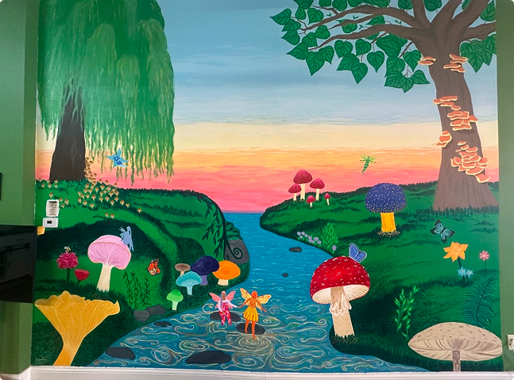
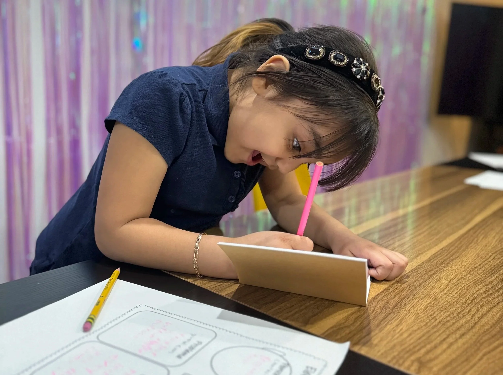

Open-source
This experience was built with the Gage Park Latinx Council, not for them. Residents shaped the narrative, the mural’s visual language, and what each trigger would teach.
Giving a Southwest Chicago community authorship over their own spatial narrative.
The Gage Park Latinx Council is a Queer, DACA, and Latinx-led grassroots organization rooted in the Southwest Side of Chicago. Through art, popular education, and mutual aid, they run two Cultural Centers that serve as sanctuaries for healing, creativity, and resistance — centering the experiences of immigrant, queer, and Latinx communities that dominant institutions have historically ignored.
How might a Southwest Chicago community encode their own stories into public space, rather than having institutions narrate their neighborhood for them?
Most AR and spatial computing experiences are designed for communities, not with them. A developer or institution identifies a wall, builds an overlay, and calls it community technology. The community becomes the backdrop.
Gage Park had a mural painted by and for its residents. It encoded local memory, cultural identity, and ecological presence — a bee pollinating, a neighborhood in bloom. What it didn’t have was a way to extend that story into an interactive layer that residents could activate themselves.

How might emerging spatial technology give a Latinx community on Chicago’s Southwest Side authorship over their own narrative rather than becoming another surface for outside institutions to project onto?
Pequeños Soñadores is a browser-based, bilingual AR nature education experience anchored to the GPLXC mural. Using MindAR.js and A-Frame, I built ten independent image-target triggers — each one tied to a specific element of the mural — that unlock animated 3D nature scenes in both English and Spanish when viewed through a mobile device. No app download required. Deployed to Netlify for immediate public access.
The bee pollination sequence became the signature interaction — a rendered 3D bee moving through the air above the physical wall, connecting ecological education to the visual language the community had already chosen for itself.
Pequeños Soñadores is a browser-based, bilingual AR nature education experience anchored to the GPLXC mural.
A CO2 molecule travels toward the tree canopy as the mural comes alive. The goal is to connect neighborhood green space to the climate cycle.
Of the ten triggers, the Monarch Butterfly carries the most weight. When a child points their phone at the mural, a border-free map of North America appears in the air. A migration arc sweeps from Mexico to Canada — no lines, no checkpoints, no nations. Just movement.
This interaction wasn’t designed in isolation. It was built for a community led by DACA recipients and undocumented immigrants, painted on a wall in a neighborhood where borders are not abstract. The Monarch doesn’t just teach ecology. It makes an argument: that movement is natural, that belonging doesn’t require permission, and that the same butterfly a child sees in Gage Park will one day visit a child in Oaxaca.
This experience was built with the Gage Park Latinx Council, not for them. Residents shaped the narrative, the mural’s visual language, and what each trigger would teach.
Pequeños Soñadores runs in the browser — no app download required. Any phone pointed at the mural can unlock the experience on the spot.
Every trigger unlocks content in both English and Spanish, so the education reflects the bilingual reality of the community it serves.
This project sits at the intersection of counter-mapping theory and participatory design. Spatial memory research suggests communities encode identity and resistance through place — murals, corner stores, block club signs. AR has typically been deployed on top of that meaning by outside actors. Pequeños Soñadores inverts that relationship.
By anchoring every AR trigger to imagery the community already authored, the technology becomes an extension of existing spatial memory rather than a replacement for it. The design question was never “what should the AR show?” It was “what has this community already said, and how do we let technology carry it further?” The Monarch Butterfly trigger makes this argument most explicitly — a border-free map of North America appearing over a mural painted by a DACA and immigrant-led organization is not incidental. It’s the project’s clearest political and ecological statement made visible.
Pequeños Soñadores is a browser-based, bilingual AR nature education experience anchored to the GPLXC mural.

Participatory design is not a methodology. It’s a power relationship.
The most consequential design decision on this project wasn’t technical — it was the choice to treat the mural as the primary text and the AR as a footnote to it. Every interaction had to earn its place by serving something the community had already made. The Dragonfly tracker that celebrates but never requires completion isn’t a UX decision. It’s a stance on what learning should feel like for kids who are told too often that they haven’t done enough.
That constraint made the work better. It also made it honest.
Pequeños Soñadores runs in the browser on the phones families already carry — no app store, no download, no account. Every trigger is bilingual from the start, not translated after the fact. Accessibility wasn’t a final audit. It shaped what we built, how we tested, and who could use it on day one.
Live deployment with 25 children surfaced what no prototype review could: where triggers confused, where delight landed, and where kids moved on before an interaction finished. Watching them point phones at the mural, swap languages, and chase the Dragonfly tracker reshaped pacing, copy, and what we chose to celebrate versus require.
GPLXC residents shaped what each trigger would teach and what the mural’s imagery would carry into AR. The Monarch’s border-free migration map, the bee’s pollination arc, the bilingual voice throughout — those arguments came from the community. My role was to build technology faithful enough to carry what they had already said on the wall.